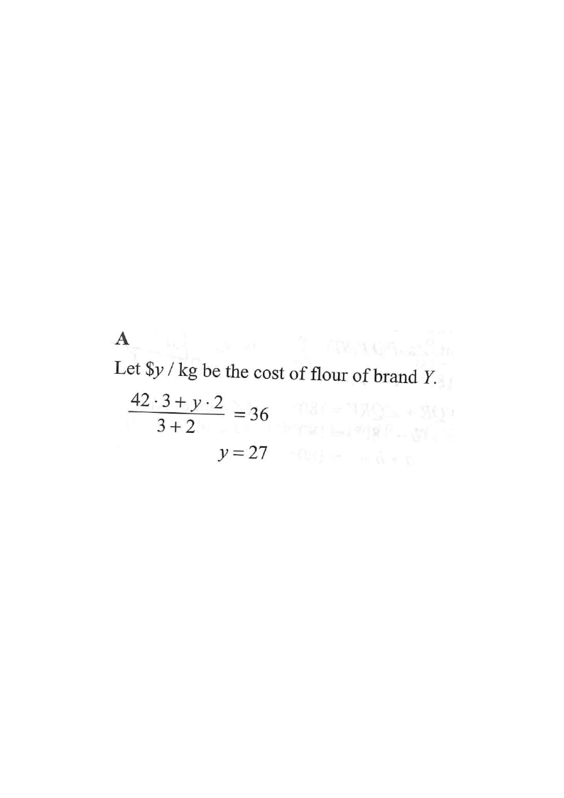

Topic 2 · Rate, Ratio and Variations — Mixture Cost
Scroll the solution to see each step highlighted on the diagram.
The cost of flour of brand X is \$42 / kg. If 3 kg of flour of brand X and 2 kg of flour of brand Y are mixed so that the cost of the mixture is \$36 / kg, find the cost of flour of brand Y.

Question. \(3\text{ kg}\) of tea at \(\$48\) per kg are mixed with \(2\text{ kg}\) of tea at \(\$x\) per kg. If the mixture costs \(\$54\) per kg, then \(x=\) A. \(\$51\) B. \(\$57\) C. \(\$63\) D. \(\$66\) [1 mark]